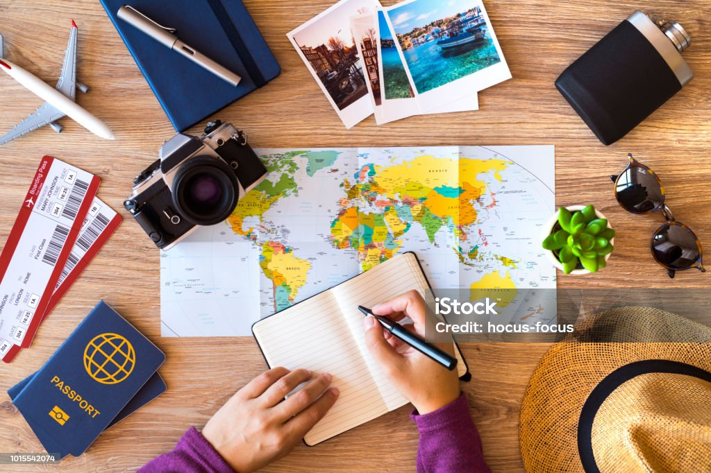

Seyahat kabusunuz olmasın peki ya nasıl mı?
Seyahate çıkmalara bayıldığınızın ama bir o kadar da korktuğunuzun farkındayız. Bu blog da işte tam da bu yüzden kuruldu.
Her şey çok karmaşık, yorucu ve zor geliyor sanıyorsunuz oysa ki birkaç küçük planlama ve yardım ile yanınızdayız.
Yapılması gerekenler basit: seyahatinizi planlamadan önce biraz Yol bloğu tüm dertlere derman olacaktır.

Günümüzde vize almanın ne kadar zor olduğunu hepimiz biliyoruz. Uçak biletleri alınmış hatta bununla yetinmeyip müze biletleri bile alınmış,
tüm otel rezervasyonları yapılmış, nereden alışveriş yapılır nerede yemek yenir listesi çıkarılmış. Hoop bir mail gelir: Vize başvurunuz reddedildi.
O an reddedilen vize başvurusu koca bir kova dolusu kaynar su olarak başınızdan aşağı dökülür. Acı ama ne yazık ki yaşamayanın şanslı sayıldığı bir süreçten geçiyoruz malumunuz.
Ayrıca abarttığımızı düşünen vatandaşlarımız için amme hizmetimiz de kanıt olarak mevcuttur.
Lütfen Tıklayınız
Ayrıca değinmekte fayda var yalnızca vize için verilen ücretin red durumunda sizden ve cebinizden çok uzaklarda olduğunu da belirtmek isterim.
Ülkemizdeki red oranlarını resmi verileri de baz alarak düşünürsek çok ciddi rakamlardan bahsetmek mümkün. Ne yazık ki olan yalnızca hayallere olmuyormuş...
Bakınız: Lütfen Tıklayınız
Gelelim sadede... Vize başvurularının reddedildiğini, durumun vahimiyetini kavradık sanıyorum. Yeterince kahrolup, saç baş yolduysak şimdi sizleri ciddiyete davet ediyorum. Evet evet tam şimdi, şuan yani. Sizler için vize başvurusunda kullanacağınız bir liste hazırladık. Buyrunuz emrinize amade:
Vize başvurumuzu yaptık, vizemizi aldık, e biletler ve rezervasyonlar zaten vardı. Şimdi sıra geldi seyahat boyunca yanımızda olması gerekenlere. Herkes hazırsa başlıyoruz.
Her şeyimiz hazır, eşyalar valizlere girdi valizler kapatıldı. Biz size birkaç dostane tavsiyede bulunmak istedik.
Gittiğiniz yer neresi olursa olsun öncelik canımız ve can sağlığımızda. Bu yüzden bilmediğiniz etkinliklere katılmayın; eylemlere, direnişlere sakın ha sakın katılmayın.
Hırsızlık ne yazık ki dünyanın her yerinde var, özellikle büyük ve turistin çok olduğu bölgelerde bayağı popüler bir durum. Her zaman çantanızın fermuarları kapalı, çantanız kontrolünüzde olsun
yemek yerken bile. Fotoğraf çekinmek için eşyalarınızı emanet etmeyin, telefonu bir yere bırakıp fotoğraf çekinmeye kalkmayın. Paranızı birden fazla yere bölün ki aksi durumda canınız yanmasın.
Geriye kaldı güzel dileklerimiz... Bol kahkahalı,bol eğlenmeli bir seyahat olsun.
Hoşçakalın...